ภาพรวมระบบ
Dead Air Remover เป็นเครื่องมือตัดช่วงเสียงเงียบ (dead air / silence) อัตโนมัติ เหมาะกับ podcast, วิดีโอ YouTube, voiceover, สัมภาษณ์ ทำงานด้วย Web Audio API + Canvas 2D ทั้งหมดในเบราว์เซอร์
หลักการทำงาน
อัปโหลดไฟล์
ลากไฟล์มาวาง หรือคลิกเลือก — รองรับ MP3, WAV, M4A, OGG, FLAC, AAC, OPUS, MP4, MOV, WebM, MKV
วิเคราะห์ (auto)
แอปจะสแกน RMS amplitude ทุก 10ms เทียบกับ threshold — เงียบติดต่อกันเกิน Min Silence = "dead air"
ปรับแต่ง (manual)
ใช้ slider 3 ตัว หรือเลือก Preset / Adaptive / Save หรือคลิกที่ waveform เพื่อ override
Export
กดปุ่ม Export → ดาวน์โหลดไฟล์ WAV (เสียง) หรือ WebM (วิดีโอ) ที่ตัด dead air ออกแล้ว
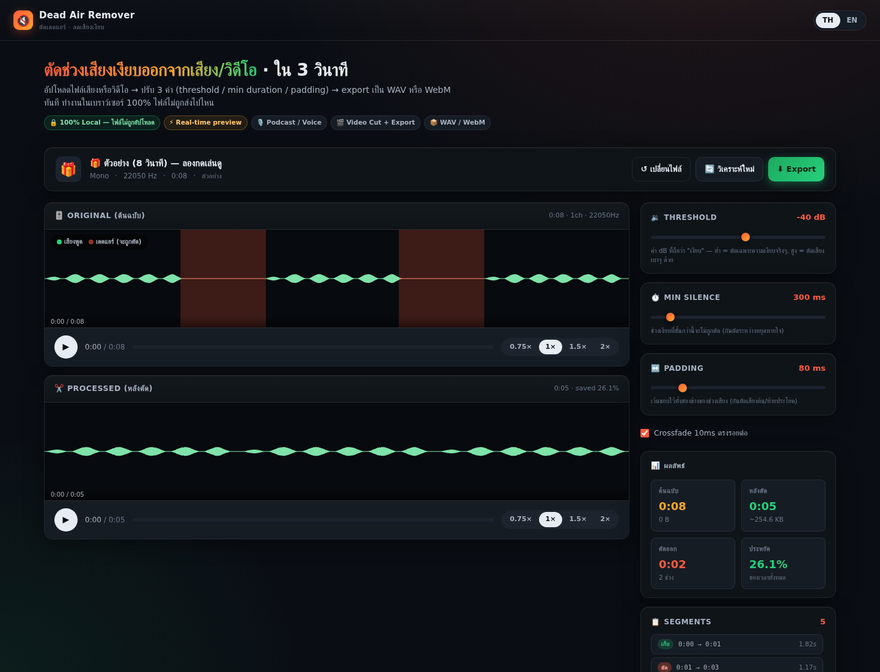
Export state — ปุ่ม disable ขณะ encoding
เมื่อกด Export แล้ว ปุ่มทั้งหมด (Export, วิเคราะห์ใหม่, เปลี่ยนไฟล์) จะ disable อัตโนมัติ เพื่อป้องกัน race condition กับ state.abort
วิธีใช้
- อัปโหลดไฟล์ → รอวิเคราะห์
- กดปุ่ม Export → ปุ่ม disable ทันที
- รอจนเสร็จ → ปุ่มกลับมา enabled
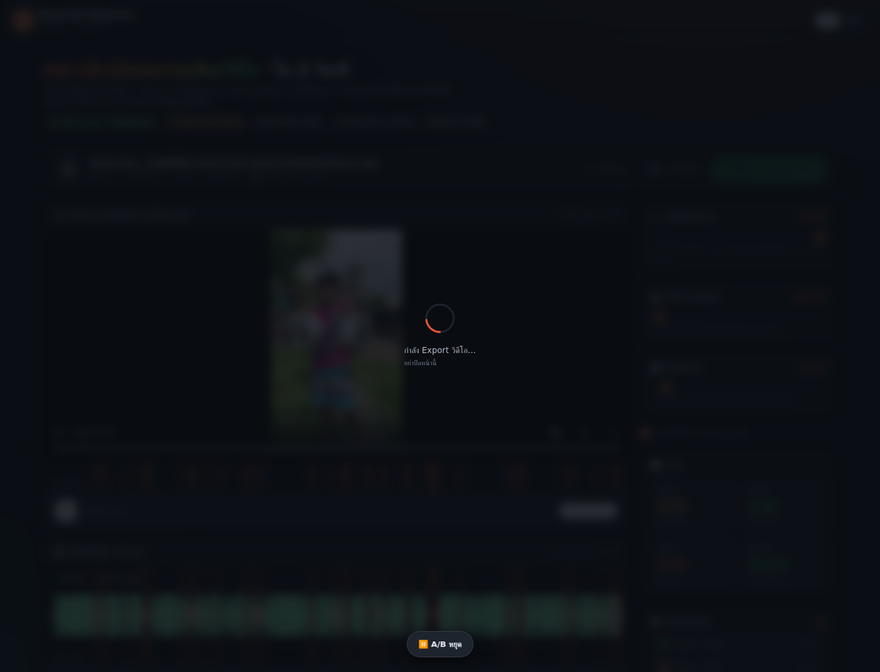
Progress bar — เห็นว่า export ไปถึงไหน
แถบ progress แสดง % ของการ export — ไฟล์ใหญ่ 70MB ใช้เวลา ~10s ผู้ใช้เห็น progress ตลอด
video ~30s, audio ~5s — ถ้าเกิน 95% ระบบจะ complete เลย เพื่อหลีกเลี่ยงการค้างที่ 99%
WebM video export — ใช้ได้ทุกที่ยกเว้น Safari
ปัจจุบัน export วิดีโอเป็น WebM (VP9+Opus) ผ่าน MediaRecorder + captureStream + seek-based playback — เล็ก, เร็ว, เปิดได้บน Chrome/Edge/Firefox/Android
ffmpeg -i input.webm -c:v libx264 -c:a aac output.mp4
วิธีใช้
- อัปโหลดไฟล์วิดีโอ (MP4/MOV/WebM)
- กดปุ่ม "Export" — ตรวจไฟล์อัตโนมัติ ถ้าเป็นวิดีโอจะ export เป็น WebM
- รอ progress 100% (แสดงขนาดไฟล์จริง) → ดาวน์โหลดอัตโนมัติ
Visual silence marker — เห็นชัดว่าจะตัดตรงไหน
ช่วง dead air ถูก overlay สีแดงโปร่งใสบน waveform ดั้งเดิม — ผู้ใช้เห็นทันทีว่าแอปจะตัดตรงไหน ไม่ต้องเชื่อ black box
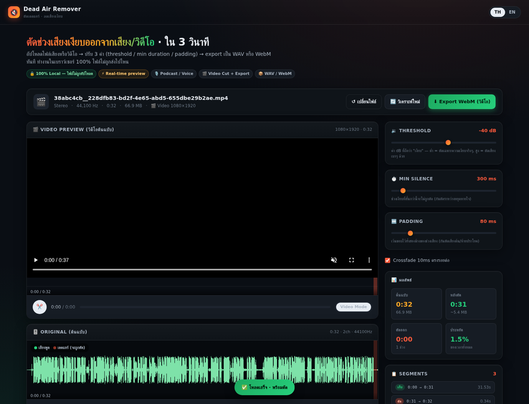
Legend
- เสียงพูด — จะถูกเก็บไว้
- เดดแอร์ — จะถูกตัดออก
Click-to-toggle — คลิก waveform เพื่อ override
ถ้าแอปตัดผิด → คลิกที่ waveform เพื่อ toggle keep ↔ cut ทันที ไม่ต้องปรับ slider
วิธีใช้
- ดู waveform — สังเกตช่วงที่ overlay สีแดง (จะถูกตัด)
- คลิก ที่ช่วงสีแดง → กลายเป็น keep (เขียว)
- คลิก ที่ช่วงเขียว → กลายเป็น cut (แดง)
- กด Export ได้เลย — ไม่ต้องวิเคราะห์ใหม่
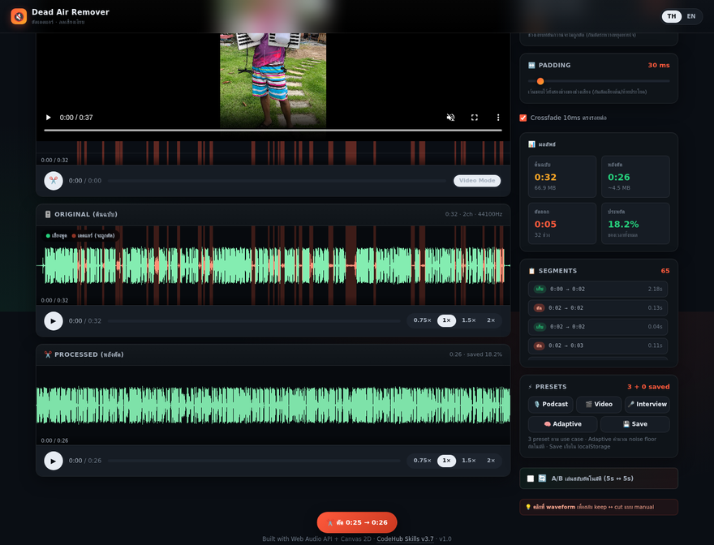
A/B auto-switch — เปรียบเทียบ original ↔ processed แบบสลับ
กด toggle เพื่อให้แอปเล่นสลับ original 5s → processed 5s → loop เปรียบเทียบง่ายๆ ว่าแอปตัดถูกจุดไหน
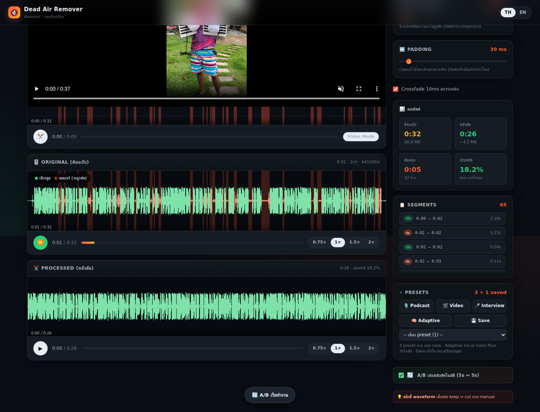
วิธีใช้
- อัปโหลดไฟล์ → วิเคราะห์เสร็จ
- กด toggle 🔄 A/B
- ฟัง 5s → เสียงจะตัด → กลับมาเล่น original
- เปรียบเทียบ: "ตรงนี้แอปตัดดีไหม? ตัดถูกจุด?"
- ปิด toggle เมื่อพอใจ → Export
3 Preset ตาม use case
กดปุ่ม preset เพื่อตั้งค่า 3 slider พร้อมกันตามประเภทไฟล์
🎙️ Podcast / Voice
ตัดเฉพาะช่วงหยุดหายใจ/เงียบจริงๆ — เก็บเสียงพูดไว้ครบทุกคำ
threshold = -45 dB
minDur = 200 ms
pad = 50 ms
🎬 Video / YouTube
ตัด pause/ช่วงเปลี่ยนฉากยาว — ไม่ตัดหายใจระหว่างพูด
threshold = -35 dB
minDur = 500 ms
pad = 100 ms
🎤 Interview
เก็บทุกคำพูด — ตัดเฉพาะช่วงเงียบยาวระหว่าง Q&A
threshold = -50 dB (เข้มงวดมาก)
minDur = 100 ms
pad = 30 ms
ตัวอย่าง — ใช้ Podcast preset
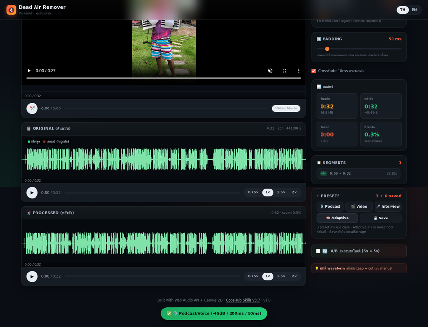
Adaptive threshold — แอปคำนวณ noise floor อัตโนมัติ
แทนที่จะเดา threshold เอง → แอปจะสแกน 30th percentile ของ dB ทั้งไฟล์ แล้วตั้ง threshold = noiseFloor + 5dB
อัลกอริทึม
- สแกน RMS amplitude ทุก 10ms
- คำนวณ dB ของแต่ละ window
- เรียง dB แล้วหา 30th percentile (≈ noise floor)
- ตั้ง threshold = noiseFloor + 5dB (เก็บเฉพาะเสียงที่ดังกว่า noise ชัดเจน)
- วิเคราะห์ใหม่ทันที
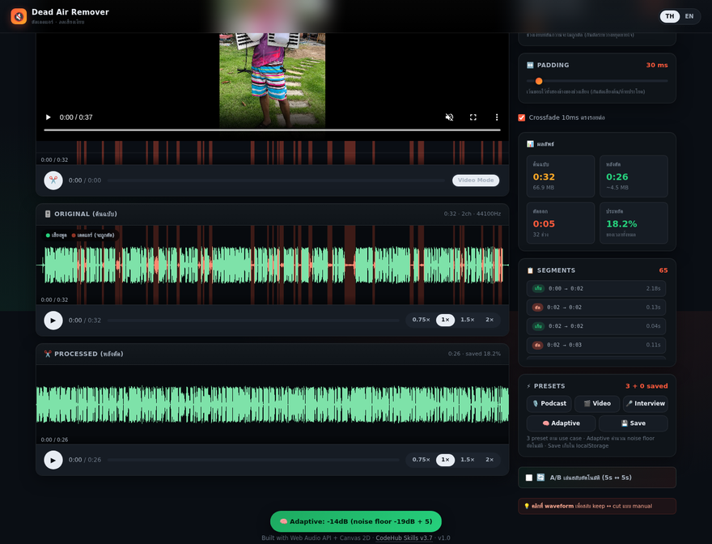
Batch processing — ตัดทีละ 20 ไฟล์
ลากหลายไฟล์พร้อมกัน → แอปเพิ่มเข้า queue → กด Process all → แอปดาวน์โหลดไฟล์ที่ตัดเสร็จทีละไฟล์
วิธีใช้
- ลากหลายไฟล์ (Ctrl+Click) มาที่ drop zone
- แอปเพิ่มเข้า Batch Queue (แสดงทันที)
- เลือก preset ที่ต้องการ (Podcast/Video/Interview)
- กด ▶ Process all & download
- แอปจะ process ทีละไฟล์ → download แต่ละไฟล์เข้า Downloads folder
- เมื่อเสร็จจะแสดง "Batch: X/Y สำเร็จ"
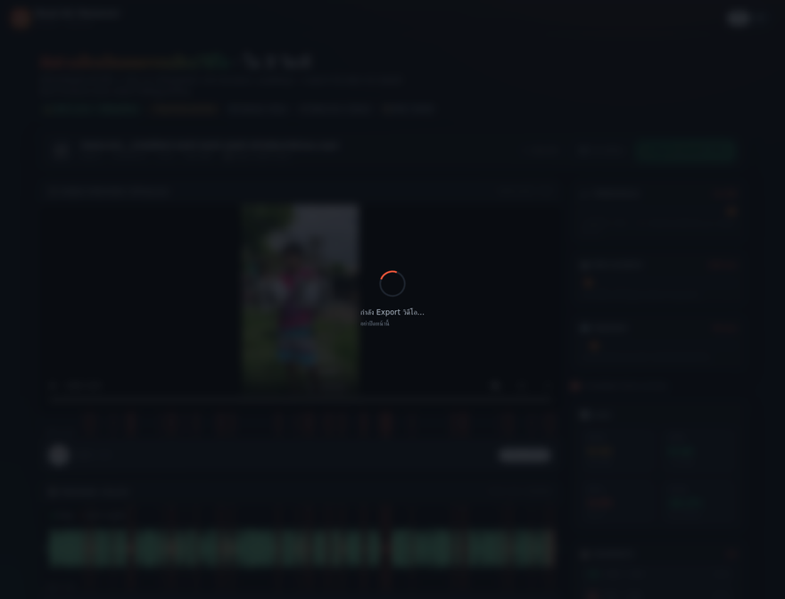
Save preset — เก็บใน localStorage ไม่หาย
ผู้ใช้ที่ตัด podcast เป็นประจำไม่ต้องปรับ slider ทุกครั้ง — บันทึก preset ไว้ใน browser ได้ไม่จำกัด
วิธีใช้
- ปรับ slider 3 ตัวให้ได้ค่าที่ต้องการ
- กด 💾 Save
- พิมพ์ชื่อ preset (เช่น "MyPodcastDefault")
- กด บันทึก
- Preset แสดงใน dropdown "เลือก preset" — เลือกเพื่อโหลดค่ากลับมา
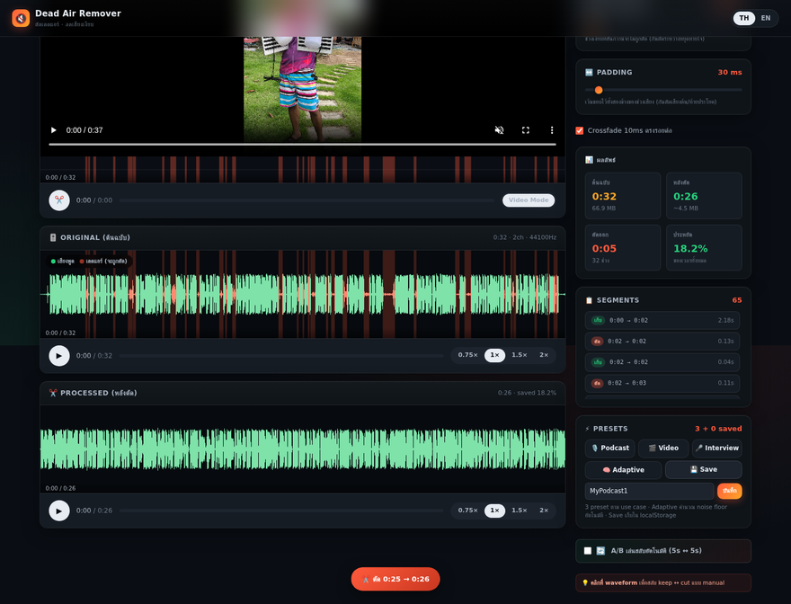
localStorage.dar_presets_v1 ของ browser นั้น — ไม่ sync ข้ามเครื่อง ถ้าต้องการ backup → Export ผ่าน DevTools (Application tab)
Settings panel — persistent language + fade
กดไอคอน ⚙️ มุมขวาบน → เปิด modal ตั้งค่า — ทุกอย่าง persist ใน localStorage ข้าม session
ตั้งค่าที่ปรับได้
- Language — TH / EN (sync กับ lang switch มุมขวาบน)
- Crossfade — เปิด/ปิด fade ตรงรอยต่อ (sync กับ checkbox หลัก)
- Crossfade duration — 0–100ms (default 10ms)
- Auto-adapt on load — ปรับ threshold อัตโนมัติทุกครั้งที่โหลดไฟล์ (off by default)
- Clear all data — ลบ presets + settings ทั้งหมด (มี confirm)
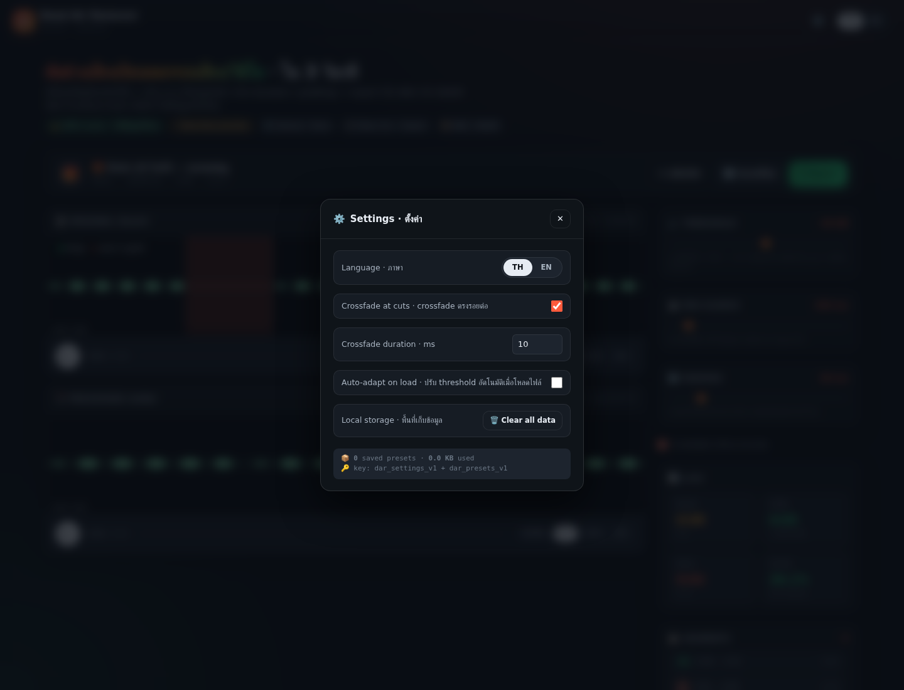
dar_settings_v1 + dar_presets_v1 แสดงใน modal (มี key + ขนาด KB ที่ใช้)
ลบ preset ที่ไม่ใช้แล้ว
เลือก preset ใน dropdown → ปุ่ม × ข้างๆ เปิดใช้งาน → กด × → confirm → ลบ
การใช้งาน
- เปิด dropdown "เลือก preset" (จะโชว์เมื่อมี saved preset ≥1)
- เลือกชื่อ preset ที่จะลบ → ปุ่ม × ข้าง dropdown เปลี่ยนเป็นสีแดง
- กด × → confirm dialog → preset หายจาก list + localStorage

Progress bar ที่ตามไบต์จริง
v1.1 progress เป็น time-estimate (คาดเดา) v1.2 progress = bytesWritten / expectedBytes — แม่นยำ 100%
อัลกอริทึม
- Audio (WAV): encodeWAV() วัดเวลาจริง → 50% เมื่อ encode เสร็จ → 100% หลัง trigger download → toast แสดง
sizeKB + ms - Video (WebM): MediaRecorder
ondataavailableนับ bytes สะสม → tickExportProgress() ทุก chunk → เป้า = totalKeepDuration × 5.125 Mbps - Success toast:
ดาวน์โหลด 5.6MB · ลด 92% จาก 70MB
Workflow สำหรับผู้ใช้ทั่วไป
🎬 Workflow A: ตัด video YouTube ที่อัดมา
- อัปโหลด MP4 → รอวิเคราะห์
- กด 🎬 Video preset (threshold = -35 dB)
- ดู waveform — ตรวจช่วง silence overlay
- เปิด 🔄 A/B เพื่อฟังเทียบ
- คลิก waveform ถ้ามี false positive (เช่น ช่วงเสียงเบาๆ ที่ไม่อยากตัด)
- กด Export WebM → ดาวน์โหลด
🎙️ Workflow B: ตัด podcast 30 นาที
- อัปโหลด MP3 → รอวิเคราะห์
- กด 🎙️ Podcast preset (-45 dB, 200 ms, 50 ms)
- ดู Segments list — ตรวจ false positive (เช่น หายใจยาว)
- คลิก waveform เพื่อ override
- กด Export WAV → ดาวน์โหลด
📦 Workflow C: ตัด 20 ไฟล์พร้อมกัน
- เลือก preset ที่ต้องการ (เช่น 🎬 Video)
- ลาก 20 ไฟล์มาที่ drop zone พร้อมกัน
- แอปเพิ่มเข้า Batch Queue
- กด ▶ Process all
- แอปดาวน์โหลด 20 ไฟล์เข้า Downloads folder
F11: Multi-File Tabs + Apply to All + Export All (v1.3)
เพิ่มใน v1.3: ทำงานหลายไฟล์พร้อมกันในหน้าเดียว ไม่ต้องรอ export ไฟล์นึงเสร็จแล้วค่อยโหลดอีกไฟล์
🎯 3 ของใหม่หลัก
- Tab per file — คลิกสลับไปมาระหว่างไฟล์โดยไม่สูญเสีย state (segments, threshold, processed buffer)
- Apply to All — เปลี่ยน threshold/min-silence/padding แล้วกดปุ่มเดียวให้ apply กับทุกไฟล์ที่ decode แล้ว
- Export All — dropdown เมนู: เลือก export เฉพาะไฟล์นี้ หรือ export ทั้งหมดทีละไฟล์ (80ms delay ป้องกัน popup blocker)
📸 3 ไฟล์ loaded พร้อมกัน
ลากไฟล์ 3 ไฟล์ลง drop zone → 3 tabs ปรากฏด้านบน waveform → ไฟล์แรก auto-decode + analyze
⚙️ Apply to All
เปลี่ยน threshold จาก -40 dB → -55 dB → กด 📋 ใช้ค่านี้กับทั้งหมด → ไฟล์ทั้ง 3 ถูก re-analyze ด้วย threshold ใหม่ทันที (segments เปลี่ยน)

📦 Export All
กดปุ่ม ⬇ Export → dropdown เปิด → เลือก 📦 ทั้งหมด (3) → ดาวน์โหลด WAV ทั้ง 3 ไฟล์ตามลำดับ

🔄 สลับไฟล์ + ปิดไฟล์
คลิก tab → waveform + segments ของไฟล์นั้นแสดงทันที (ไม่ต้อง decode ใหม่ — cache ไว้ใน state.files[])
คลิก × บน active tab → ลบไฟล์ออกจาก queue → auto-switch ไป tab ข้างเคียง หรือ reset กลับ drop zone ถ้าเหลือไฟล์เดียว
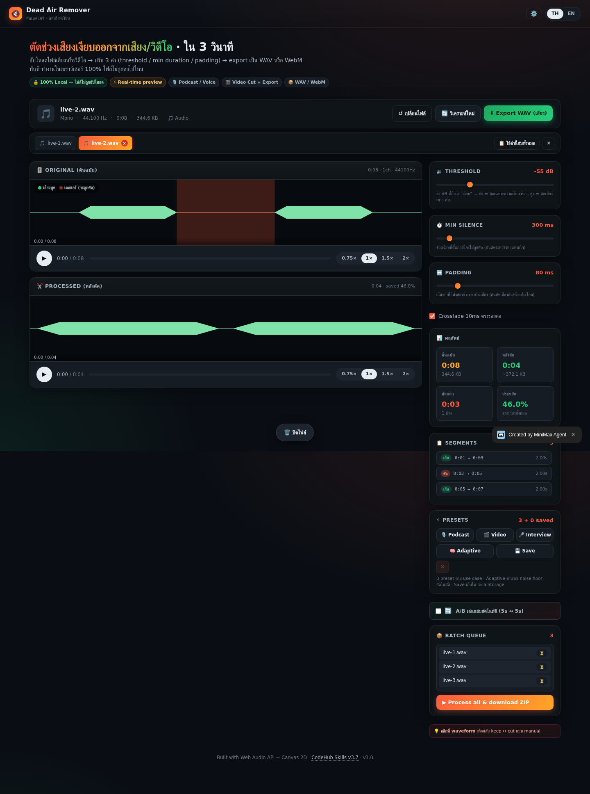
🧠 State Architecture
state.files[] = [
{ id, file, name, kind, size,
audioBuffer, segments, processedBuffer,
duration, sampleRate, numChannels,
status: 'pending' | 'decoded' | 'error',
error: null | string },
...
]
state.activeFileIndex = -1 | 0..N-1ทุกไฟล์เก็บ buffer/segments แยก → สลับไฟล์ได้ทันทีโดยไม่ต้อง decode ซ้ำ
คำถามที่พบบ่อย
❓ ไฟล์ถูกส่งไปเซิร์ฟเวอร์ไหม?
ไม่ — ทุกอย่างทำในเบราว์เซอร์ ดู Network tab ใน DevTools ขณะอัปโหลดจะเห็นว่าไม่มี request ออกนอกเครื่อง
❓ ทำไมบางไฟล์ Export แล้วเป็น WebM ไม่ใช่ MP4?
WebM รองรับใน Chrome/Edge/Firefox แต่ Safari/iPhone ไม่รองรับ — ใช้ MP4 export (F3) ถ้าต้องเปิดบน iPhone
❓ threshold ค่าไหนเหมาะกับ podcast?
ใช้ Preset Podcast (-45 dB) เป็นค่า default — ถ้ายังตัดมากไป ลด threshold ลง (-50 dB) / ถ้าตัดน้อยไป เพิ่ม (-40 dB)
❓ ทำไม podcast ของผมไม่ถูกตัดเลย?
ลอง Adaptive (F8) — แอปจะคำนวณ noise floor ให้อัตโนมัติ หรือลด threshold ลงถ้าเสียงพูดเบา
❓ Batch ใหญ่ๆ จะใช้เวลาเท่าไหร่?
~1-2 วินาที ต่อ 1 นาที ของ audio — ไฟล์ 30 นาที ใช้ ~30-60 วินาที
❓ ลบ preset ที่บันทึกไว้ได้ไหม?
ใน v1.1 ยังไม่มี UI — ใช้ DevTools Console: localStorage.removeItem('dar_presets_v1')
Built with Web Audio API + Canvas 2D · CodeHub Skills v3.7 · v1.3 · 2026-07-13